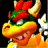
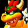
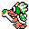
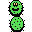
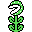
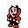
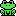

Mario Desktop Icons

Mario Icons
Archived from an old version of Nintendo of Norway's website (nintendo.no).
 



DOWNLOAD
 25 .ico (Windows Icon) files zipped (43.1 KB)
25 .ico (Windows Icon) files zipped (43.1 KB)
More Mario Icons
Archived from an old version of The Mushroom Kingdom (classicgaming.com/tmk).
PREVIEW:

DOWNLOAD
5 .icl (Icon Library) files zipped (22.7 KB)
5 .dll files zipped (23.8 KB)
NSMB Desktop Icons
Perfect for your Windows PC/Mac.


DOWNLOAD
10 .ico files zipped (Windows) (378 KB)
10 icon files zipped (Mac OS) (366 KB)